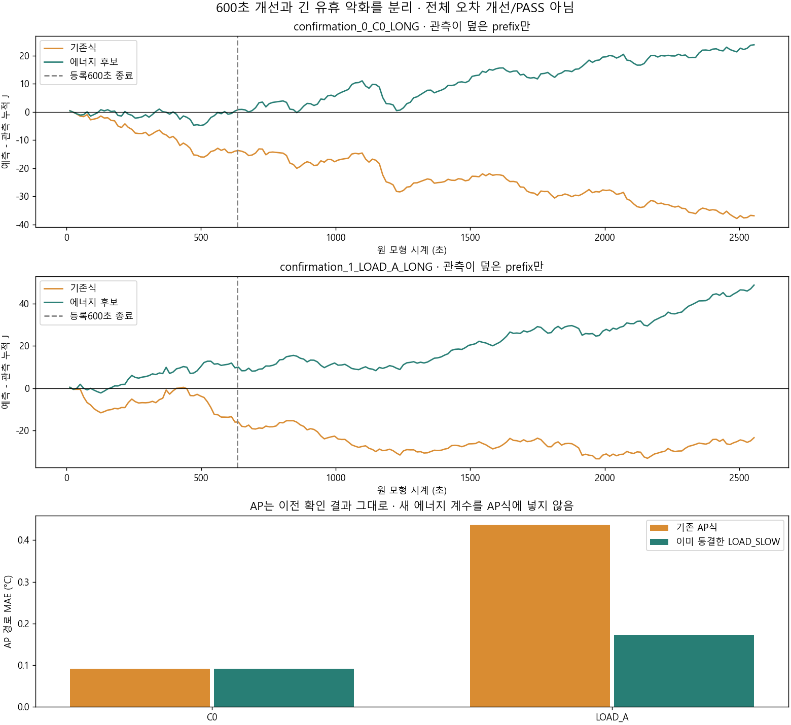
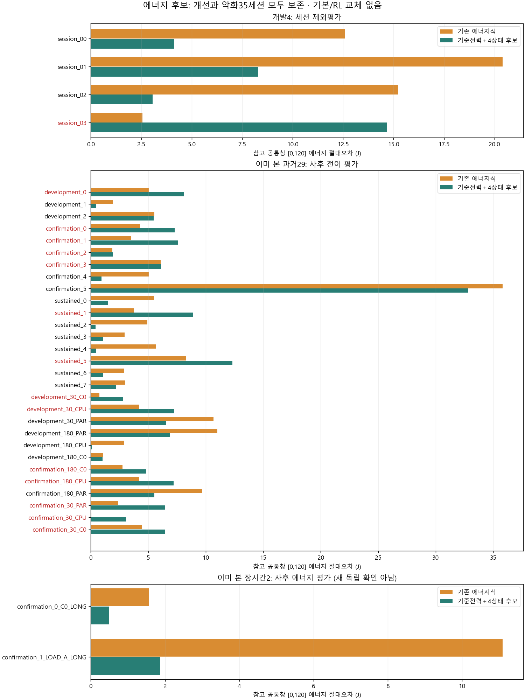

| 고정600초창 | 원 J차이 → 후보 J차이 | 원 AP MAE → 고정후보 |
|---|---|---|
| C0 | -13.148 → +1.342J | 0.013 → 0.013°C |
| LOAD_A | -15.151 → +10.763J | 0.544 → 0.186°C |
긴유휴에서는상수offset 누적으로악화합니다. LOAD의덮인등록회복구간은절대7.655→38.700J,원래전체회복은끝표본누락으로null입니다. 과거29의J 평균절대오차5.522→5.402J이나14세션악화,AP도이전13악화를보존합니다. 개선창만골라전체성공으로표현하지않습니다.
한국어 보고서·원인·역할·명령 · 모든 J창·결측 · AP와에너지 세션 비교 · 별도 에너지 후보 · 추정 전 등록 · 검증·보존

